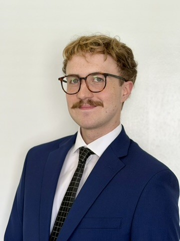

Colby Jacobs
I manage the Student Innovators program at the FSU Innovation Hub and study information technology at Florida State University.
LinkedIn
Work
-
OurPatch
A full-stack web platform that connects people to environmental organizations and events in Tallahassee. I worked with local organizations to build its recognition and engagement.
-
Patient Care Portal
A standalone kiosk that organizes medical information for a Calhoun hospital with no internet access. The interface is built with React and Tailwind and runs on a Raspberry Pi with a touch screen.
Experience and skills
-
Program manager and graduate assistant
FSU Innovation Hub, Tallahassee
I direct the Student Innovators program and manage seven project lead interns. I run daily operations at the Hub, give students access to its resources, and set up the space and audio and video for events. I deployed and upgraded a PiSignage server and helped move the Hub to InTune.
-
Camp coordinator and teacher
Young Scholars Program at FSU
I ran the programming section and taught computer science fundamentals. With the other leaders I coordinated lessons on design thinking, vibe coding, 3D printing and pitch development.
-
Project facilitator intern
FSU Innovation Hub
I mentored students in Student Innovators on technical and professional skills, and taught Scrum and Agile to shorten team timelines.
-
Technical support consultant
Art District Real Estate, Tallahassee
I modeled the setup of security and WiFi equipment across several properties, managed its installation and maintenance, and researched systems that fit each tenant's needs.
-
Manager
New World Rides VR Arcade, Tallahassee
I ran several Meta Quest systems and the Roto Loco Motion Ride on my own, mapped VR environments, troubleshot technical problems and trained four employees.
-
Python, Java, C++ and C#. React and Node.js for the web. Azure, AWS and InTune for infrastructure. Network administration, operating systems, databases and cybersecurity.
Education
Master's in information technology
Focus in project management and leadership, Florida State University. GPA 4.0. Graduate certificates in information leadership and management, and in information architecture, are in progress.
Bachelor's in computer science
Minor in innovation, Florida State University. GPA 3.6.